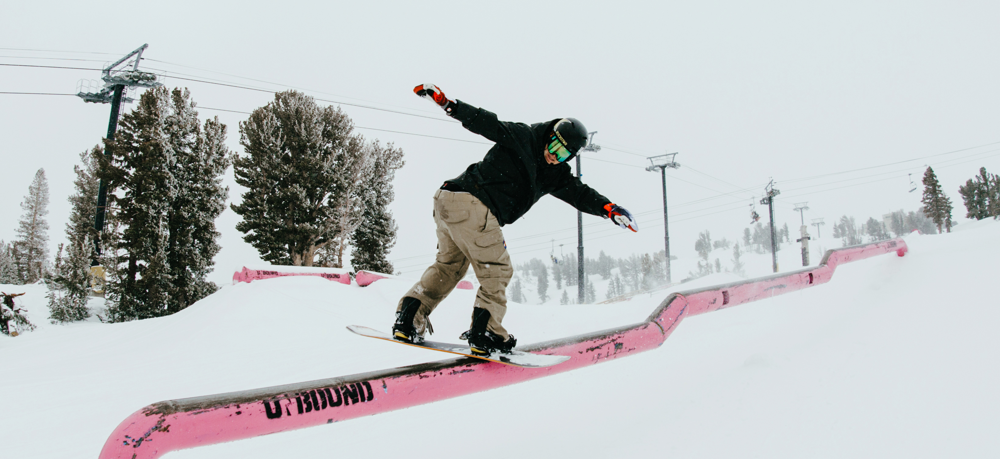
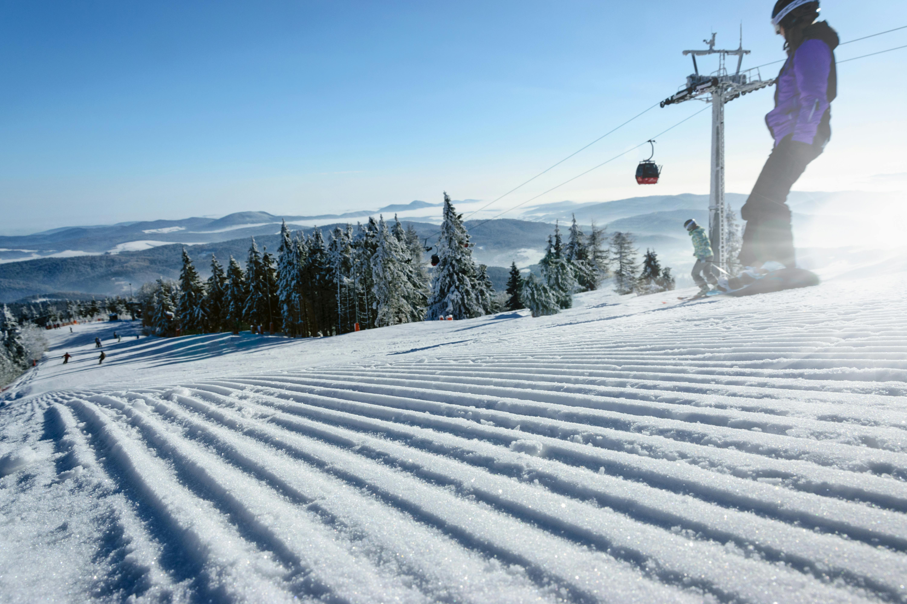
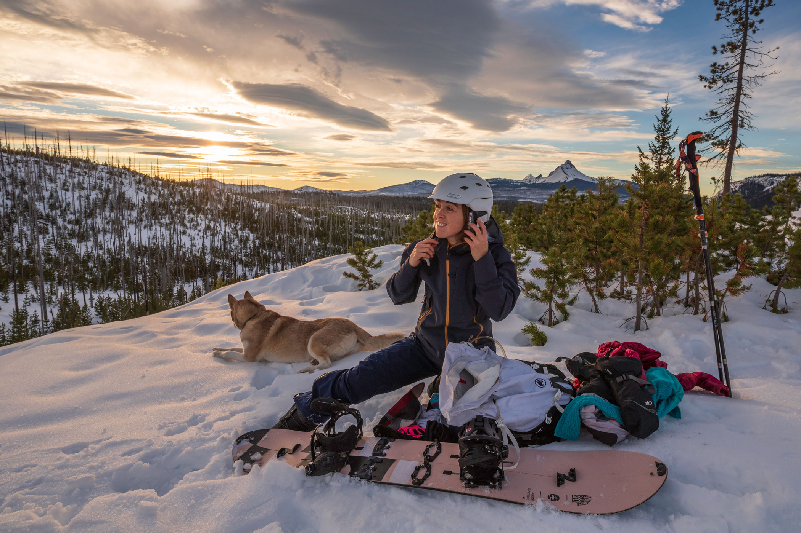

Park Riding
Park riding focuses on jumps, rails, and halfpipes. Riders perform tricks like grabs, spins, and flips. Creativity and style are highly valued.
Groomers
Groomers are smooth, maintained runs. Perfect for carving and building speed. Riders can focus on technique and precision, making it ideal for beginners and pros alike.
Backcountry
Backcountry riding is off-piste, exploring natural, untouched terrain. It requires avalanche awareness, proper gear, and advanced skills.
Choosing the Right Style for You
Every snowboarder finds their niche. Beginners often start with groomed runs to practice control and build confidence. Freestyle riders thrive in terrain parks, where rails and jumps test creativity and balance. Backcountry riders seek untouched powder, but this style requires avalanche training, safety gear, and strong physical endurance.
As you progress, experiment with different terrains to discover what excites you most. Many riders mix styles—switching from carving on groomers one day to chasing powder or practicing tricks the next.